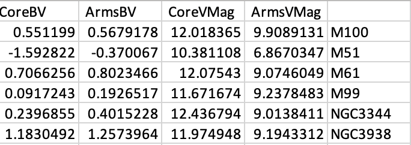
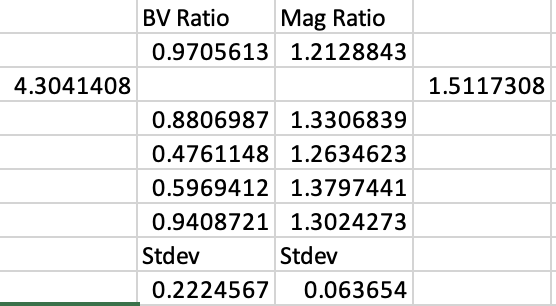

My python code produced a table of values corresponding to the magnitudes of the cores and 'not the core' (labeled as arms) of each galaxy and the B-V values of each galaxy. The values for M51 seem a bit questionable to me, but it may be due to the way I defined the boundaries of the galaxy given that it is an interacting galaxy. An image of the data table values is below:

Data Table of Calculated Mag and B-V Values for the Core and 'Not the Core' (arms) of Each Galaxy
I then took the ratios of the magnitudes between the core vs 'not the core' and the ratio of the B-V numbers between the core vs 'not the core' and inputted this into a data table. I then took the standard deviations between the different galaxies. I excluded M51 from this as its values skewwed the ratios and standard deviations quite dramatically. An image of this data table is below:

Ratios of the Magnitude and B-V Numbers for Each Galaxy Between the Core and Arms ('Not the Core') and the Corresponding Standard Deviations
What I found is that the B-V ratios indicated the core is hotter than the arms of the galaxies, which could be due to the fact that the stellar population is denser in the core. The ratios also showed that the magnitude of the core is higher than the magnitude of the arms. The standard deviation of the magnitudes was very low, especially compared to the standard deviation of the B-V numbers. What I gathered from this and by visually observing the morphology of the different galaxies is that while the magnitudes stayed relatively constant, the deviations in the B-V numbers indicate that the difference in colors - indicative of temperature and age - likely vary largely in the 'not core' regions of the galaxy. For example comparing M100 and NGC 3938 that had similar B-V ratios (0.97 and 0.94) had more spread out and wispy/asymmetrical arms. Compared to NGC 3344, however, that had a much lower B-V ratio (0.59 --> indicating the colors of the core and arms varied greatly), had more compact arms.
M51 Has Fairly Spread Out and Asymmetrical Arms
NGC 3344 is Fairly Compact and Symmetrical
NGC 3938 Has Fairly Sprawled Out and Wispy Arms
There are indeed limitations to my results. The definition of my boundaries, especially the boundaries of the outer galaxy may or may not be fully inclusive of every aspect of the galaxy as the arms are irregular bodies. Further, if I had more time, I would like to make my photmetry methods more robust. I would do this by performing foreground star corrections as well as create stellar population models to be able to analyze more intricate parts of the arms. Lastly, it is difficult and a bit presumptious to make assumptions about the correlation between magnitude, B-V numbers, and morphology with only 6 data points. While I can make some correlated observations, I would need more data points from different galaxies.
Overall, I learned a lot about the trials and errors, computational, and synthesis aspects of dealing with data and a self-produced scientfic project. There are a multitude of directions I could still take with my data. I'm grateful for the opportunity to develop my knowledge and skills through a project like this.